[[ Note du Traducteur : Thomas Stevens est le premier cycliste à avoir fait le tour du monde ; par la même occasion il est le premier cycliste à avoir traversé les Etats-Unis d'océan à océan ; les 4 premiers chapitres relatent sa traversée des Etats-Unis. ]]
A Travers la Terre des Mormons et par les Montagnes Rocheuses
Après avoir passé Medicine Bow Valley [[ Ndt : ville d'environ 2000 habitants lors du passage de Stevens, du comté de Carbon, Territoire du Wyoming ]] et le lac de Como je trouve une route bien roulante, la surface étant de gravier dur et la plaine ferme et sèche. Alors que j'atteins le sommet d'une de ces crêtes rocheuses qui dans les environs partage la plaine en de nombreux bassins peu profonds, je me retrouve tout à coup à quelques pas d'un petit troupeau d'antilopes qui paissent paisiblement sur l'autre côté de l'étroite crête, inconscientes de la présence de l'un des présumés fiers seigneurs de la création. Mon revolver toujours à portée de main retentit clair et sec dans l'air de la montagne, et les antilopes effarées bondissent à travers la plaine dans une succession de sauts rapides et saccadés propres à cet animal agile ; mais avant qu'elles aient parcouru une centaines de yards [[ Ndt : 91 mètres ]] l'une d'entre elles reste en arrière et finalement chancelle et se couche sur l'herbe. Alors que je m'approche de ce mâle il lutte vaillament pour se relever et filer derrière ses compagnons, mais l'effort est trop grand pour lui, et arrivant à sa hauteur, je mets rapidement fin à sa souffrance d'une balle derrière l'oreille. C'est un ajout dont je suis fier à ma liste de gibiers jusque là plutôt limitée, qui comprend maintenant des liévres, un blaireau, un oison féroce, une antilope et un coyote maigre et maladif, que j'ai renversé en Utah.
Medicine Bow, autrefois
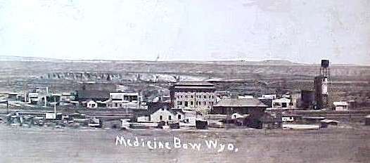
Lac de Como
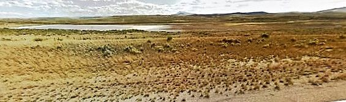
De cette crête on a une vue étendue sur les amples, larges plaines et les montagnes environnantes. La Montagne Elk semble toujours à portée de main, sa forme imposante marquant les limites occidentales de la chaîne Medicine Bow [[ Ndt : Medicine Bow est une chaîne de montagnes dans les Montagnes Rocheuses, et s' étend du nord du Colorado au sud du Wyoming ]] dont les pentes couvertes de pins sombres forment la frontière occidentale des plaines. Derrière elles à l'ouest c'est le Snowy Range [[ Ndt : chaîne de montagne formant la limite septentrionale de de la chaîne Medicine Bow. ]], dominant de sa grandeur fantômatique jusqu'aux sommets couverts de bois de charpente de la chaîne Medicine Bow, de même que cette dernière domine les plaines à ses pieds. Au sud des montagnes plus enneigées se détachent sur le ciel comme des nervures blanches sur un fond bleu, avec le pic Longs [[ Ndt : un des sommets des Montagnes Rocheuses dans le Colorado. ]] et le pic Fremont [[ Ndt : troisième plus haut sommet du Wyoming ]] qui les dominent toutes de la tête et des épaules. La chaîne de montagnes Rattlesnake [[ Ndt : chaîne mineure de montagnes dans le Wyoming ]], avec le pic de Laramie [[ Ndt : le plus haut sommet de la chaîne de montagnes Laramie dans le Wyoming ]] dressant ses dix mille pieds [[ Ndt : 3048 mètres ]] de beauté brute vers les nuages sont visibles au nord. A l'est, la chaîne de montagnes Black Hills [[ Ndt : chaîne de montagnes peu élevée qui nait dans le Dakota du Sud et s'étend jusque dans le Wyoming ]], la dernière chaîne des Rocheuses [[ Ndt : les Montagnes Rocheuses ]] est maintenant la seule barrière qui s'interpose entre moi et les grandes prairies qui s'étendent loin vers l'est jusqu'à la rivière Missouri et «les États» [[ Ndt : rappellons que 'les Etats' désigne les 13 premières colonies britanniques d'Amérique à avoir déclaré leur indépendance en 1776 et qui ont donné naissance aux Etats-Unis ; situées sur la côte est - où se dirige Thomas Stevens - des USA il s'agit de : New Hampshire, New York, Pennsylvanie, Massachusetts, Rhode Island, Connecticut, New Jersey, Delaware, Maryland, Virginie, Caroline du Nord, Caroline du Sud, Georgie ]].
Snowy Range
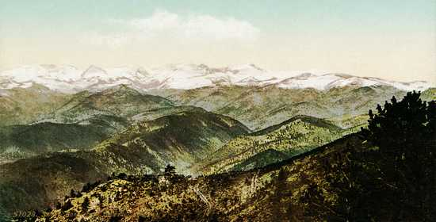
Long Peak
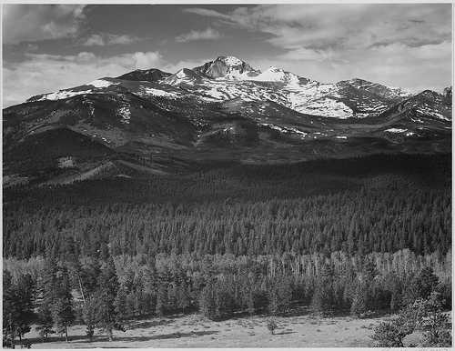
Fremont Peak
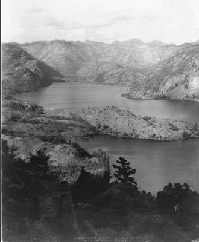
Laramie Peak
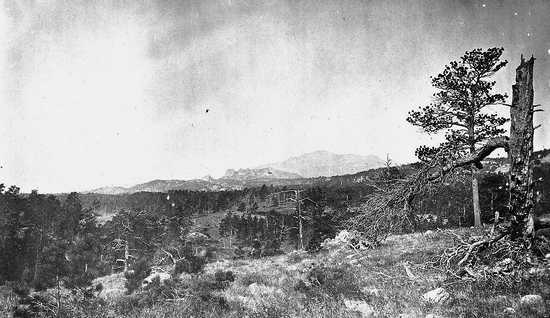
Un véritable tempête de pluie de ces Plaines de Laramie fait du surplace au-dessus de ma tête quand je sors de Rock Creek [[ Ndt : fondée en 1867, la ville était un important point de jonction pour les chariots et une étape vers le nord ; après l'arrivée du chemin de fer au Montana et à l'intérieur du Wyoming la ville perdit sa raison d'être et en 1889 était quasiment à l'abandon. Source : wyomingtalesandtrails.com https://goo.gl/QkjzXL ]] après le dîner, et peu de temps après l'épreuve commence.
Rock Creek de nos jours...
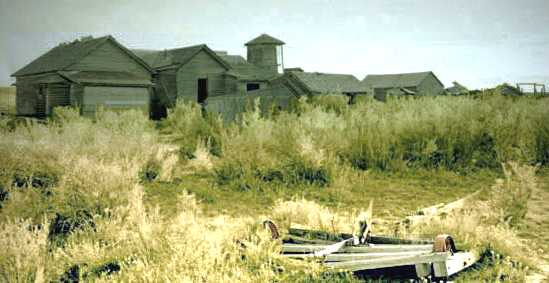
Ca n'a rien du gentil crépitement d'une averse, une tempête de pluie et de vent sur ces hautes plaines ; elle vient avec un souffle et des rafales qui menacent de vous soulever de terre. La pluie est précipitée dans l'air par les rafales sauvages du vent, et vient de toutes les direction à la fois. Alors que vous vous agrippez désespérément à votre chapeau, le vent déboutonne malicieusement votre manteau de caoutchouc et le retourne sur votre tête et claque les coins boueux et mouillés sur votre visage et vos yeux ; avant que vous puissiez vous dépétrer la figure de l'étreinte froide et incommode du mackintosh trempé [[ Ndt : Mackintosh est une marque de manteaux imperméables en toile caoutchoutée ]], la pluie qui vous vient dessus par en bas, aussi bien que par dessus, par les côtés et de partout ailleurs, vous a trempé jusqu'aux aisselles ; et c'est alors qu'un léger zéphyr achève votre déconfiture en dérobant votre chapeau qui se sauve à travers la plaine détrempée à une vitesse qui fait renoncer à le poursuivre. La tempête se transforme en une averse torrentielle de grêlons, gros morceaux ronds de glace qui me font grimacer à chaque fois que l'un d'eux me frappe de plein fouet, et ils heurtent les rayons d'acier du bicycle, les faisant résonner harmonieusement. Roulant doucement pour la traversée du bassin de Cooper Lake [[ Ndt : lac dans les environs de la localité de Cooper ; dans les environs on trouve aussi la bourgade Cooper, Cooper Hill ( Ndt : le promontoire de Cooper) et Cooper Creek ( Ndt : le ruisseau de Cooper), tous ces sites vraisemblablement dénommé ainsi à l'époque du nom de la firme March et Cooper, "empire" de terres et d'élevage. Source : https://goo.gl/A2MYk5 ]], à la nuit tombée, j'ai l'occasion d'entrapercevoir de mystérieuses figures sombres s'élançant ici et là à travers le voile sombre qui m'entoure. Le bassin est rempli d'antilopes, et ma présence ici dans l'obscurité les remplit de frayeur ; leur flair et leur sens instinctif d'une présence étrangère les avertit de ma proximité ; et comme elles ne peuvent pas me voir dans l'obscurité elles se précipitent surexcitées par l'alerte.
Après avoir passé la nuit à Lookout, je pars de bon matin, dans le but d'arriver à Laramie City pour le dîner [[ Ndt : la ville tire son nom d'un trappeur canadien français, Jacques Laramie, de même que la rivière Laramie, le pic Laramie, les Plaines Laramie, le fort Laramie ; la ville fut fondée vers le milieu des années 1860, point de passage des diligences et des chariots de l'Overland Trail (piste terrestre qui desservait notamment l'Oregon, la Californie, la Piste des Mormons) et se développa avec l'arrivée du chemin de fer vers 1868. Source : Wikipedia https://goo.gl/rizNX1 et wyomingplaces.pbworks.com https://goo.gl/FK9Riy ]]. Ces Plaines de Laramie peuvent être aimables et faire bonne figure quand elles en ont envie, et alors que je fonce tête baissée sur une route en assez bon état ce dimanche matin ensoleillé, elles en ont sans doute envie. La rivière Laramie sur ma gauche, les chaînes de montagnes Medicine Bow et Snowy - respectivement noire et blanche - se dressant dans les airs sur la droite, les plaines entre deux parsemées de troupeaux d'antilopes, complètent un tableau qui ne peut être vu que sur les Plaines de Laramie. En atteignant un plateau qui atteint presqu'à la prestance d'une colline, je peux voir les roues nickelées des cyclistes de Laramie brillant au soleil de l'autre côté de la rivière à plusieurs miles de là où je suis. Ils ont fait quelques miles pour venir à ma rencontre, mais ont pris du mauvais côté de la rivière, en pensant que je l'avais croisée en aval de Rock Creek. Les membres du Laramie Bicycle Club sont les premiers cyclistes que je vois depuis que j'ai quitté la Californie ; et, comme je suis personnellement connu à Laramie, il est inutile d'insister sur la façon dont ils me reçoivent [[ Ndt : Thomas Stevens a travaillé au tout début des années 1880 pour la compagnie de chemin de fer Union Pacific à Laramie, a occasionnellement contribué à un journal local et entré en contact à cette occasion avec le Laramie Bicycle Club ]]. Les randonnées du Laramie Club sont bien connues dans le monde du cyclisme par les nombreux et captivants récits de la plume de leur capitaine, Mr. Owen, qui, avec deux autres membres, ont fait sur leurs machines un tour du Yellowstone National Park [[ Ndt : en 1883, William Owen (1859-1947), C.S Greenbaum et W.K Sinclair sont les premiers à avoir fait en bicycle le tour du Parc de Yellowstone. Source : wyohistory.org https://goo.gl/SVWVBy et books.google.com https://goo.gl/V0YCc1 ]]. Ils ont de très bonnes routes naturelles autour de Laramie, mais lors de leurs excursions dans les montagnes ces "rudes rouleurs des Rocheuses" prennent nécessairement des risques qui sont inconnus de leurs confrères plus à l'est.
Laramie autrefois
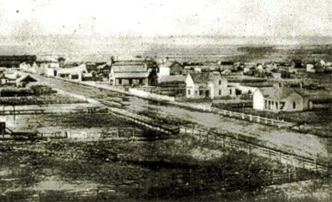
Mardi matin [[ Ndt : Thomas Stevens est arrivé à Laramie le dimanche 1er juin 1884 à midi ; Il a repris la route le mardi 3 juin tôt le matin. Source : The Daily Boomerang, un quotidien, à l'époque, de Laramie https://goo.gl/8Tp5Q7 ]] je pars pour grimper la dernière chaîne qui me sépare de "la plaine" - populairement connue sous cette appellation - et, dès mon arrivée au sommet, je fais une halte pour un regard d'adieu sur cette grande et merveilleuse région, où j'ai voyagé d'une façon si novatrice ce dernier mois, à travers ses montagnes, plaines et déserts. La vue d'où je me tiens est magnifique - oui, au-delà des capacités humaines pour la décrire - et bien à même de laisser une impression indélébile sur l'esprit de qui la contemple, peut-être pour la dernière fois. Les plaines Laramie s'étendent vers le nord et vers l'ouest, comme une mer verte houleuse. Emergeant d'un canyon sombre derrière la montagne Jelm, la rivière Laramie enroule sa course serpentine en direction nord-est jusqu'à ce qu'on la perde de vue derrière les montagnes de la chaîne contigüe, sur laquelle je suis en ce moment, et dans sa course reçoit l'appui de la Petite Laramie et de nombre de petits cours d'eau émergeant des remparts montagneux qui constituent la bordure ouest du merveilleux tableau maintenant devant moi. Les pluies inhabituelles ont rempli les innombrables dépressions des plaines d'étangs et de petits lacs qui dans leur écrin de verdure scintillent et brillent dans la lumière du soleil du matin comme des pierres précieuses. Un train vient de l'ouest, serpentant entre elles comme s'il cherchait la plus belle, et s'arrête enfin à Laramie City, qui se niche au beau milieu d'elles - la gemme la plus belle d'entre toutes - la "Gemme des Rocheuses." Sheep Mountain [[ Ndt : la montagne Sheep ]], l'incarnation de tout ce qui est énorme et indestructible, s'avance hardiment et avec un air de défi comme si sa mission était de monter la garde sur tout ce qui se trouve à l'ouest. La chaîne de montagnes Bow Medicine se voit maintenant plus dominante, et un sommet chauve fait saillie ici et là au-dessus des forêts sombres, timidement, comme s'il avait honte de sa nudité. Notre vieil ami, Elk Mountain, est toujours en vue, un mont imposant et magnifique, servant de point de repère jusqu'à une centaine de miles à l'entour. Et au-delà, à l'ouest et au sud - à une bonne centaine de miles - ce sont les montagnes enneigées ; leurs pics chenus à la pureté éclatante pénétrant dans le vaste dôme bleu du ciel, comme des monarques revêtus de leurs habits royaux. Et on en voit d'autres encore, blancs et sombres, s'étirant là-bas jusque dans le Colorado, pic après pic, crête après crête, jusqu'à ce qu'on les perde dans le lointain impénétrable.
Jelm mountain
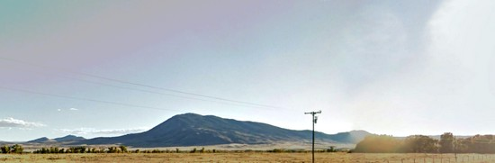
Sheep mountain
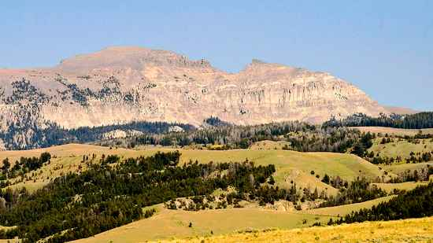
Apppuyé sur mon bicycle au sommet de cette montagne, absorbé par ce spectacle splendide, et inhalant l'air chargé d'ozone, en m'attardant sur les réméniscences d'expériences récentes de ma traversée des régions merveilleuses à l'ouest ; son entremêlement étrange de montagnes couvertes de forêts et de collines verdoyantes ; ses montagneuses rocheuses stériles et ses plaines mornes et désolées ; ses vastes solitudes enneigées et ensoleillées, ses recoins sylvestres et ensoleillés ; le non moins étrange mélange de personnes ; le peau-rouge errant et son histoire pathétique ; le prospecteur à l'espoir fiévreux, peinant et terrassant à la recherche des métaux précieux enfermés dans les monts éternels ; et le cow-boy sauvage et libre qui, monté sur son bronco nerveux, erre parmi ces plaines et ces montagnes, libre comme l'Arabe du désert, je pousse un soupir quand je me rends compte que ni mes mots ni ma plume ne peuvent espérer faire justice à ce pays.
Ma route a maintenant franchi le défilé de Cheyenne, et à partir de ce point est essentiellement en descente vers la ville de Cheyenne. Bientôt, j'arrive sur une surface naturellement lisse de granit qui s'étend sur douze miles, où je dois garder le frein serré sur la majeure partie de la distance, et le frottement constant échauffe le frein-cuillère [[ Ndt : sur les grand-bi la partie qui assure le freinage est une sorte de levier en forme de cuillère qui frotte sur le pneu ; le grand-bi de Thomas Stevens est équipé de pneus pleins ]] et roussit le pneu en caoutchouc noir. Ce soir, j'atteins Cheyenne, où je trouve un bicycle club de vingt membres, et où la renommée de mon voyage depuis San Francisco attire une telle foule au coin de la rue où je descends, qu'un agent de ville chargé de la surveillance des trottoirs, vêtu de bleu, me demande de m'éloigner à l'hôtel. Est ce que je le fais ? Oui, je m'en vais à pied. Les "flics" de Cheyenne sont corpulents, des hommes avec qui ils ne fait pas bon jouer. Et il convient qu'ils soient "des hommes corpulents, avec qui il ne fait pas bon jouer", sinon les cow-boys méchants et sauvages viendraient et "peindraient la ville en rouge" beaucoup trop souvent [[ Ndt : pour rappel, « to paint a town in red » littéralement : peindre une ville en rouge, signifie : aller faire la fête en ville. Et notamment avec une forte consommation d’alcool. ]].
C'est le matin du 4 Juin que je dis adieu à la «Cité Magique» [[ Ndt : fondée en 1867, Cheyenne s'est développée très rapidement avec l'arrivée du chemin de fer de l'Union Pacific ; ce développement rapide lui valut le surnom de Cité Magique "Magic City". Source : plainshumanities.unl.edu https://goo.gl/EodBpz ]], et, tournant le dos aux montagnes, m'éloigne en roulant sur une route très agréable vers le soleil levant.
Cheyenne, dans les années 1870
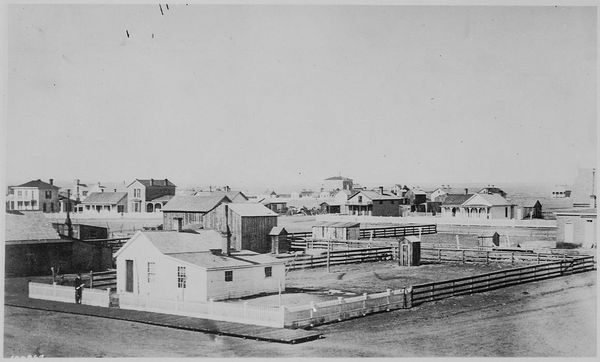
Je ne suis pas longtemps avant de rencontrer cet élément caractéristique d'une scène des plaines de l'ouest, une «goélette des prairies" [[ Ndt : il s'agit des chariot bâchés de la colonisation de l'ouest américain ; le romantisme de la conquête les a surnommés "prairie schooner" pour leur bâche blanche "ressemblant" aux voiles d'une goélette. Source : https://fr.wikipedia.org/wiki/Chariot_bâché ]] ; et la rencontre avec les goélettes des prairies sera désormais un incident quotidien de mon voyage vers l'est. Nombre de ces «pèlerins» viennent des arrière-pays du Missouri et de l'Arkansas, ou de districts ruraux de quelque autre Etat de l'Ouest, où le persévérant mais encore limité cycliste n'a pas encore eu le temps de pénétrer, et le bicycle est donc à leurs yeux une merveille à observer et commenter, généralement - il faut l'admettre - avec des propos plus proches de vaines paroles que de la connaissance du sujet discuté.
Chariot de colon dit "prairie schooner"
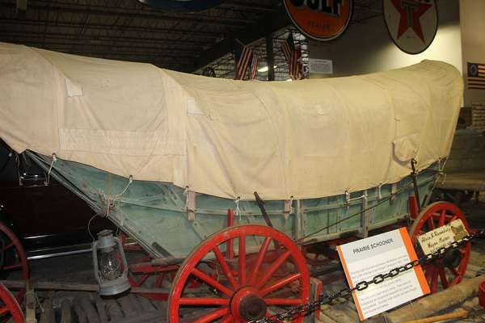
Non loin de l'endroit où le sentier mène de l'aval de la crique de Crow jusque sur les plateaux plus hauts, je trouve la plaine herbeuse plus roulante que le sentier des chariots, et sur une courte distance je roule bon train aussi facilement que je puisse le souhaiter. Mais ça ne m'est pas permis très longtemps ; le sol est bientôt couvert d'une moquette de petit cactus non enracinés qui se fixent au pneu en caoutchouc avec la ténacité de pot-de-colle du cocklebur à la queue d'un mulet [[ Ndt : le cocklebur est une plante herbacée dont certaines espèces ont de longues épines à la base des feuilles. Source : https://en.wikipedia.org/wiki/Xanthium ]]. Bien sûr, ils sont raclés lorsqu'ils passent sous la tête de fourche, mais ce n'est pas le pneu en train de les ramasser qui met tous mes sens en alerte afin de ne laisser échapper aucun détail ; c'est le redoutable risque de faire une tête en avant au milieu de ces terribles végétaux, qui me provoque de froids frissons qui se déplacent du haut en bas de ma colonne vertébrale et fait suinter de vraies grosses gouttes de sueur de mon front. A une petite échelle, aucune calamité physique plus épouvantable ne pourrait arriver à quelqu'un que de faire une tête sur une pelouse couverte de cactus ; des millions d'aiguilles miniatures couvriraient sa peau tendre d'irritations, et sa vision d'étoiles flottantes. Des nuages de ténèbres assombriraient peut-être toute sa vie. Désormais, parmi les hommes il serait un coussin d'aiguilles au visage solennel, aux yeux bilieux et ne sourirait plus jamais. J'ai connu une fois un jeune homme nommé Whipple, qui s'est assis sur un tas de ces cactus à un pique-nique à Virginia Dale, Wyoming [[ Ndt : en fait Virginia Dale est dans le Colorado, à 6km au sud de la ligne de séparation avec le Wyoming ]], et il n'a plus jamais souri. Deux jeunes filles des Rocheuses, aux yeux doux, l'invitèrent à venir prendre place entre elles sur une couche mince et apparemment inoffensive de foin. En souriant modestement, c'est un Whipple sans méfiance qui accepta l'invitation ; en plaisantant, il suggéra qu'il serait comme une rose entre deux épines. Mais aussitôt qu'il s'assit il fut convaincu que c'était l'épine la plus vive - ou plutôt des millions d'épines - entre deux roses. Bien sûr, les deux jeunes filles aux yeux doux ne savaient pas que c'était là, n'est-ce pas ? Mais, c'est du pareil au même, il ne sourit plus jamais - pas d'elles.
A la maison de service du chemin de fer où je demande à dîner, je fais l'erreur de laisser le bicycle derrière la maison, et la femme me prend pour un voyageur sans but, oui, un vagabond. Elle glapit, "Nous ne pouvons pas nourrir tout le monde qui passe par ici», et me ferme la porte à la figure. Hier, j'étais le centre d'admiration des foules dans la ville la plus riche de cette dimension en Amérique ; aujourd'hui je suis pris pour un clochard aux yeux affamés, et repoussé de la porte par une femme avec une robe de calicot fané, et un coléreux "qu'est-ce-que-vous-faites-là ?" se lit dans ses yeux. Telle est la vie dans le Far-West.
Peu à peu, les Rocheuses ont reculé de mon champ de vision, et je suis seul dans la prairie illimitée. Il y a un sentiment d'isolement total à se retrouver seul sur les plaines qu'on ne ressent pas dans les régions de montagnes. Il y a quelque chose de tangible et d'hospitalier dans une montagne ; mais ici, où il n'y a rien en vue nulle part -- rien que l'immenses plaine monotone, s'étirant de tout côté aussi loin que le regard puisse porter, et tout autour, de quelque côté que l'on regarde, rien que le tapis vert en-dessous et l'arche bleu céruléen au-dessus [[ Ndt : le bleu céruléen est un bleu ciel (littéraire) ]] -- on a le sentiment d'être le seul occupant d'une vaste partie d'un espace d'habitude inoccupé.
Ce soir, en traversant à gué Pole Creek [[ Ndt ; la crique Pole ]] avec le bicycle, mes vêtements et mes chaussures - tout en même temps - ces dernières chutent dans la rivière ; et dans ma course sauvage après les chaussures je laisse tomber plusieurs vêtements ; puis je laisse tomber ma machine dans mon effort pour sauver les vêtements et finit par tomber dans l'eau avec tout mes affaires. Tout est repêché avec succès, mais un triste changement s'est fait sur les vêtements et les chaussures. Ce matin on m'a pris pour un vagabond sans ami, sans-abri ; ce soir alors que je me trouve sur la rive de Pole Creek sans rien sur moi qu'une fine cape à la modestie naturelle, et essore tristement mes vêtements, je me sens très proche d'en être un ! Pine Bluffs me fournit un abri pour la nuit, et quelques miles de route le lendemain matin me font franchir la ligne de séparation et entrer dans le Nebraska.
Hameau de Pine Bluffs en 1868 !
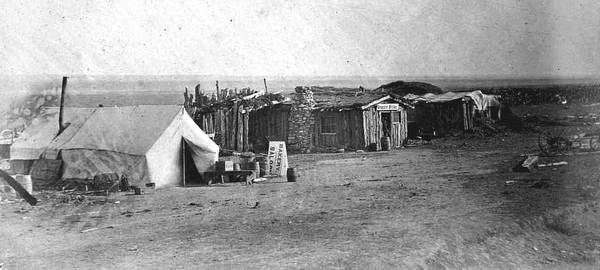
Mon parcours mène en aval de Pole Creek, avec des routes roulables sur probablement la moitié de la distance, des falaises basses, rocheuses bordent les deux côtés de l'étroite vallée et mènent au-delà à des prairies élevées et roulantes. Le long de ces falaises rocheuses, les Indiens avaient coutume de provoquer la débandade de troupeaux de bisons, qui tombant des falaises abruptes, étaient tués par centaines, procurant ainsi abondance de boeuf pour le long hiver. Il n'y a pas de bisons ici maintenant - ils ont disparu avec les indiens - et je n'aurai jamais la chance d'ajouter un bison à ma liste de trophés de ce voyage. Mais ils ont laissé quantité de traces tangibles derrière eux, sous forme d'empreintes profondément érodées conduisant des falaises jusqu'à la crique.
La prairie est par ici richement pailleté de fleurs de toutes les couleurs qui remplissent l'air du matin d'un parfum plaisant. L'air est doux et embaumé, en contraste frappant avec l'atmosphère froide tôt le matin dans la région montagneuse, où les neiges accumulées de mille hivers exercent leur influence refroidissante en opposition avec les rayons bénins du vieux soleil. Ce soir, je passe par "Prairie-dog City" [[ Ndt : la Ville des Chiens de Prairie ]] la plus grande congrégation de logements de chiens de prairie rencontrée pendant le voyage. La «ville» couvre des centaines d'acres de terre, et les chiens sortent en de telles multitudes pour présenter leurs protestations bruyantes et nerveuses contre mon intrusion, que je me considère comme tout à fait dans mon droit de tirer sur eux. J'en touche un en plein dans le mille, mais il disparait comme un éclair dans son trou, qui maintenant devient sa tombe. Les mouvements vifs comme des flèches du chien de prairie, et sa disposition instinctive pour son foyer, combinent pour accomplir les derniers tristes rites d'enterrement de son corps défunt. Alors que, la nuit venant, j'approche de Potter [[ Ndt : Potter est une bourgade du Nebraska, née en 1870 avec l'arrivée du chemin de fer ; son nom vient du général Potter, un actionnaire du chemin de fer. Source : https://en.wikipedia.org/wiki/Potter,_Nebraska ]], où j'espère un hébergement pour la nuit, une tempête vient de l'ouest en mugissant, et ça se termine rapidement par une course entre moi et la tempête. Sur une bonne route bien roulante je pourrais gagner la course ; mais handicapé par un chemin inroulable presque dissimulé derrière des herbes hautes et luxuriantes, la tempête me rattrape, et arrive à Potter en vainqueur par environ 300 longueurs.
Dans la matinée, je démarre par beau temps, à proximité de Sidney la route devient meilleure et je fais mon entrée dans cette ville dynamique à une vitesse soutenue. Je décide de rester à Sidney pour le dîner, et passe le reste de la matinée à visiter le fort voisin [[ Ndt : Fort Sidney ]].
ville de Sidney, vers l'époque du passage de Stevens
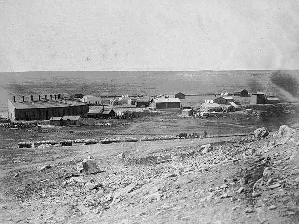
Fin chapitre 3
Page précédente - Page suivante
ADMINISTRATIVIA
Dernière mise à jour de cette page : 20 avril 2017
URL : http://orkic.github.io/bicygonzo/atwoab/chap3/trois.html
Contactez-nous : Contact
Website © Copyright - ef. Bicy Gonzo.